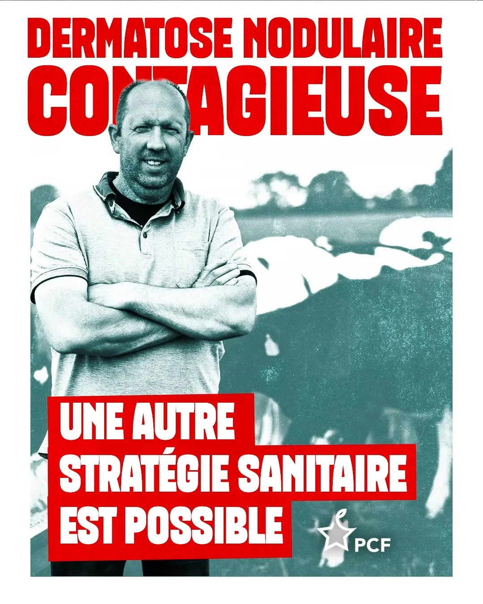
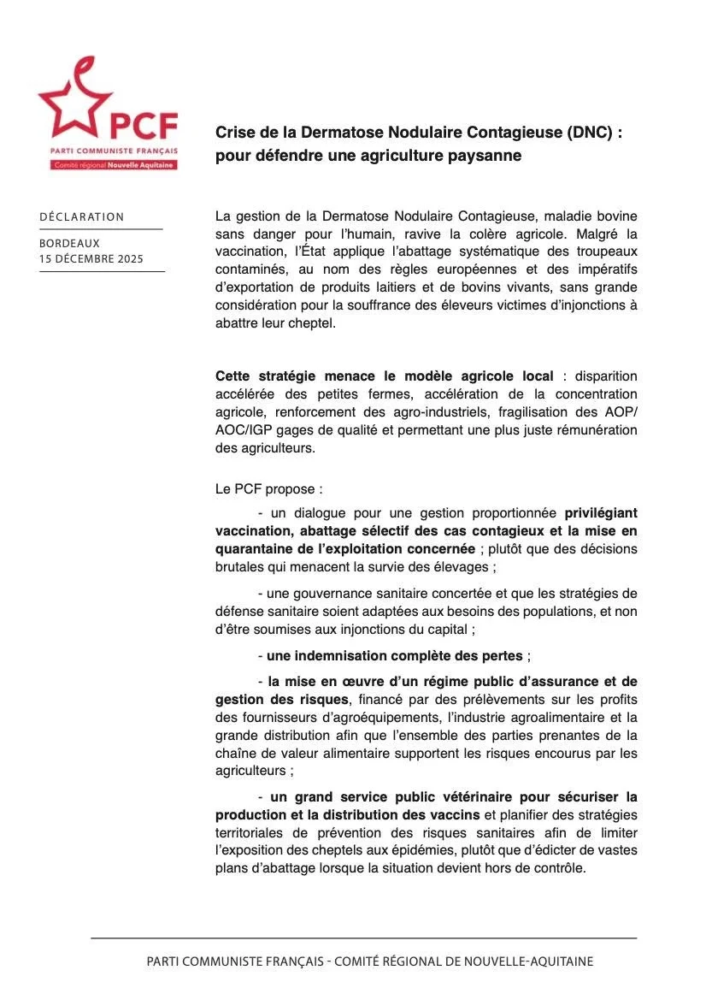
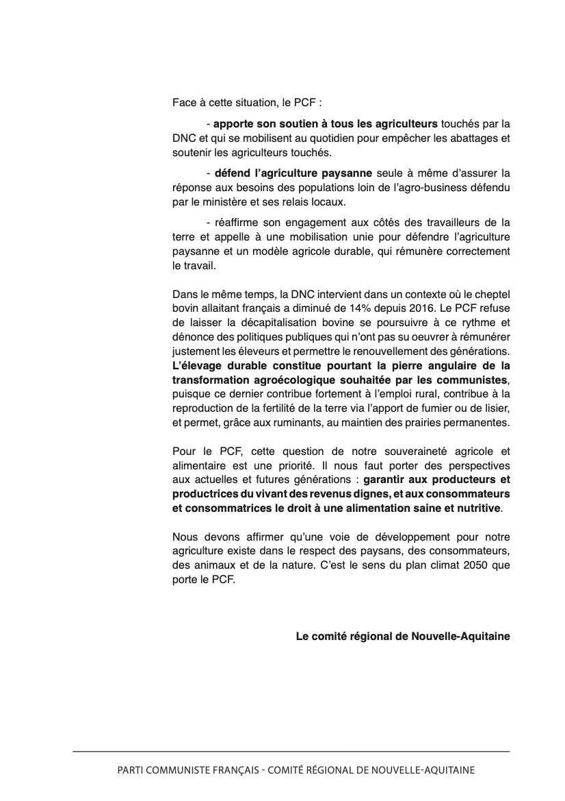

Publication relayée par le PCF 79
Dermatose nodulaire contagieuse. Le PCF Gironde présente ses propositions
Date de mise à jour indiquée par Facebook · 15 décembre 2025
Texte de la publication · PCF Gironde
Crise de la Dermatose Nodulaire Contagieuse (DNC) : Pour défendre une agriculture paysanne.
La gestion de la DMC, maladie bovine sans danger pour l'humain, ravive la colère agricole. Malgré la vaccination, l'État applique l’abattage systématique des troupeaux contaminés, au nom des règles européennes et des impératifs d'exportation de produits laitiers et de bovins vivants, sans grande considération pour la souffrance des éleveuses et éleveurs.
Retrouvez toutes les propositions du PCF dans le communiqué
PCF 79 - Parti Communiste Français fédération des Deux-Sèvres
Fédération de la Vienne - Parti Communiste Français
Auberge du Perigord
PCF Charente
PCF 64
PCF Lot et Garonne Le défi des Jours Heureux
Pcf Creuse
PCF - Corrèze
PCF Haute-Vienne



Sources
PCF Gironde · publication relayée par le PCF 79 · bibliothèque Facebook · AR-0002-FB-00931
À lire aussi · À Cerizay, le rassemblement de la Confédération paysanne en vidéo · Le lien vidéo